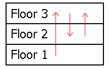

Project Euler 522
Project Euler 522
题目
Hilbert’s Blackout
Despite the popularity of Hilbert’s infinite hotel, Hilbert decided to try managing extremely large finite hotels, instead.
To cut costs, Hilbert wished to power the new hotel with his own special generator. Each floor would send power to the floor above it, with the top floor sending power back down to the bottom floor. That way, Hilbert could have the generator placed on any given floor (as he likes having the option) and have electricity flow freely throughout the entire hotel.
Unfortunately, the contractors misinterpreted the schematics when they built the hotel. They informed Hilbert that each floor sends power to another floor at random, instead. This may compromise Hilbert’s freedom to have the generator placed anywhere, since blackouts could occur on certain floors.
For example, consider a sample flow diagram for a three-story hotel:

If the generator were placed on the first floor, then every floor would receive power. But if it were placed on the second or third floors instead, then there would be a blackout on the first floor. Note that while a given floor can receive power from many other floors at once, it can only send power to one other floor.
To resolve the blackout concerns, Hilbert decided to have a minimal number of floors rewired. To rewire a floor is to change the floor it sends power to. In the sample diagram above, all possible blackouts can be avoided by rewiring the second floor to send power to the first floor instead of the third floor.
Let \(F(n)\) be the sum of the minimum number of floor rewirings needed over all possible power-flow arrangements in a hotel of \(n\) floors. For example, \(F(3) = 6, F(8) = 16276736,\) and \(F(100) \bmod 135707531 = 84326147\).
Find \(F(12344321) \bmod 135707531\).
解决方案
我们把每层楼看作一个点，共 \(n\) 个点。每层把电送到另一层，等价于：每个点恰有一条出边，且不允许自环。因此每个布线方案对应一个有向图 \(G\)：点集：\(\{1,\dots,n\}\)；每点出度恒为 \(1\)；无自环。
这类图是典型的函数图：每个连通块都由一个有向环，外加若干指向环的入树组成。题目要求发电机放在任意楼层都能让全楼通电。在函数图里，这等价于：从任意点出发都能到达全部点。这在每点出度1的前提下，等价于整图必须是一个长度为 \(n\) 的有向环（单一大环）。
记\(D(G)\)为图\(G\)入度为 \(0\) 的点数（可称孤儿节点）；\(S(G)\)图\(G\)的平滑孤立环数，即环上每个点除环内前驱外，不再接收任何外部入边，并且该环不是全图大环（长度 \(2\sim n-2\)）的数量。
结论给出对图\(G\)的最少操作次数为：\(O(G)=D(G)+S(G).\)下面给出证明过程：
首先证明下界：一次重接最多让 \(D+S\) 下降1。一次操作只改一条边 \(u\to a\) 为 \(u\to b\)。这个操作只会改变 \(a,b\) 两点入度，因此 \(D\) 不可能一次下降超过 1；因此，只会直接影响包含顶点 \(u\) 的那个环结构，\(S\) 不可能一次下降超过 1。最终，两者合起来，\(\Phi(G)=D(G)+S(G)\)，一次最多下降 1。所以至少要 \(\Phi(G)\) 次操作。
接下来证明上界：总能构造一次操作让 \(\Phi\) 恰降 1。分情况构造即可：
- 有孤儿节点，且有平滑孤立环。从该平滑环里挑一条边改指向一个孤儿节点，那么会破坏一个平滑环，同时填补一个孤儿节点，因此净效果\(\Phi\downarrow1\)。
- 有孤儿节点，但没有平滑孤立环。这时图中必有入度 \(\ge2\) 的点。把指向它的一条边改去指向孤儿节点。不会新生平滑孤立环，孤儿节点数减 1，因此净效果\(\Phi\downarrow1\)。
- 没有孤儿节点。此时图不是一个长度为 \(n\) 的大环，但又有 \(D=0\)。由于每个点出度恒为 \(1\)，总入度也恒为 \(n\)。再结合“没有孤儿节点”即每点入度 \(\ge 1\)，可得每点入度实际上都等于 \(1\)。因此整图一定是若干个两两不交的有向环（设有 \(r\ge 2\) 个环）。
又因为没有自环，所以每个环长度至少为 \(2\)；且 \(r\ge2\) 时每个环长度都不可能是 \(n\)，故它们都属于非平凡环。并且每个环都没有外部入边（否则环上某点入度会 \(>1\)），所以这 \(r\) 个环全部是平滑孤立环。故当前\(D=0, S=r, \Phi=D+S=r.\)
现在取两个不同的环 \(C_1,C_2\)。在 \(C_1\) 中取一条边 \(u\to u^+\)，把它改接为 \(u\to v\)，其中 \(v\in C_2\)。这一步后的变化逐项为：\(u^+\) 原先唯一入边是 \(u\to u^+\)，被删后入度变 \(0\)，新产生一个孤儿节点，故\(D' = 1.\)环 \(C_1\) 被打断，不再是环，故 \(S\) 至少减 \(1\)。\(v\) 在 \(C_2\) 内本来已有一个环内前驱入边，再加上新边 \(u\to v\)，入度变为 \(2\)，所以 \(C_2\) 不再是平滑孤立环，故 \(S\) 再减 \(1\)。其他环不受影响。因此\(S' = r-2, D' = 1,\)从而\(\Phi' = D'+S' = 1+(r-2)=r-1=\Phi-1.\)
也就是说，这一步严格地使 \(\Phi\) 恰好下降 \(1\)。随后图中已出现孤儿节点，便可转入前两类情形继续处理。
因此只要 \(\Phi>0\) 就能做一步让 \(\Phi\) 降 1。结合下界，最少次数恰为 \(D+S\)。
题目定义\(\displaystyle F(n)=\sum_{G}O(G)=\sum_{G}(D(G)+S(G)).\)由线性性，分别统计总孤儿节点数与总平滑孤立环数即可。
首先计算孤儿节点的贡献。固定某个点 \(v\) 要成为孤儿节点（入度 0）：点 \(v\) 自己出边有 \(n-1\) 选（不能指自己）其余 \(n-1\) 个点每个都不能指 \(v\)，且不能自环，所以各有 \(n-2\) 选故该 \(v\) 为孤儿节点的方案数：\((n-1)(n-2)^{n-1}.\)对 \(n\) 个点求和，有：
\[\sum_G D(G)=n(n-1)(n-2)^{n-1}.\]
接下来计算平滑孤立环的贡献。固定一个长度为 \(k\) 的平滑孤立环（\(2\le k\le n-2\)）：选环点：\(\dbinom{n}{k}\)；在这 \(k\) 点上形成有向环，有\((k-1)!\)种方法；对每个环外点，目标不能是自己，也不能落到环上 \(k\) 点，所以有 \(n-k-1\) 种选法。总共 \((n-k-1)^{n-k}\) 种。
故长度 \(k\) 的总贡献：\(\dbinom{n}{k}(k-1)(n-k-1)^{n-k}.\)再对 \(k\) 求和：
\[ \sum_G S(G)=\sum_{k=2}^{n-2}\binom{n}{k}(k-1)!(n-k-1)^{n-k}. \]
因此最终得到闭式：
\[ F(n)=n(n-1)(n-2)^{n-1} +\sum_{k=2}^{n-2}\binom{n}{k}(k-1)!(n-k-1)^{n-k},(n\ge 3) \]
可见，我们需要计算大量 \((n-k-1)^{n-k}=t^{t+1}=t^t\cdot t\)。
设 \(P[t]=t^t\bmod M\)。按素数分解考虑贡献。对每个素数 \(p\)，对每个 \(t=ip\)，有\(v_p(t)=1+v_p(i),p^{tv_p(t)}=(p^p)^{i(1+v_p(i))}.\)
令 \(b=p^p\)，\(q_i=b^i\)（随 \(i\) 递推）。对固定 \(i\)，把 \(q_i\) 乘入 \(P[ip]\) 共 \(1+v_p(i)\) 次即可。实现上用 \(x=1,p,p^2,\dots\)，当 \(i\bmod x=0\) 时乘一次。
代码
1 |
|